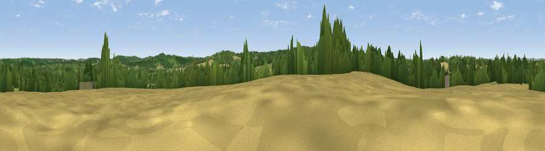

Viewpoint near Groombridge
#34207 in England · top 29% of its area beats it · near GroombridgeWhere it is
The exact computed spot (TQ 52575 34575). Click the marker for map links.
The view, rendered

A 360° render of this exact spot computed from the terrain model, tree cover and land cover — summer colours, afternoon light, calibrated against photographs of famous viewpoints. Real trees, hedges and buildings will differ in detail.
The panorama
Grey silhouette: terrain skyline in each direction (720 bearings, Earth curvature and refraction included). Dashed green: skyline with trees (+15 m) and buildings (+8 m) as obstacles. Blue strip: how far the ground is visible on each bearing.
Where the view opens
Wedge length = distance to the farthest visible ground on that bearing (vegetation-aware). Rings at 10, 25 and 50 km.
What fills the view
52% woodland · 29% grassland · 18% cropland ·
Angular shares of the visible panorama (visual magnitude), not map area. Landscape diversity 0.46 (0–1 Shannon).
Key numbers
More beautiful places nearby
The staircase of upgrades: each row has a higher view potential than everything closer. Driving times are estimates from straight-line distance, calibrated against real road routing — check an actual route before setting out.
| Place | Direction | Drive | Score |
|---|---|---|---|
| Viewpoint near Crowborough | SW · 2 km | ~5 min | 44.3 |
| Viewpoint near Town Row | ESE · 4 km | ~9 min | 48.4 |
| Viewpoint near Upper Hartfield | WSW · 6 km | ~13 min | 59.6 |
| Viewpoint near Sevenoaks Weald | N · 17 km | ~30 min | 60.2 |
| Viewpoint near Ide Hill | N · 17 km | ~30 min | 62.7 |
| Viewpoint near French Street | NNW · 18 km | ~31 min | 64.5 |
| Viewpoint near Shipbourne | NNE · 19 km | ~33 min | 66.2 |
| Brightling Obelisk [Brightling Down] | SE · 20 km | ~33 min | 69.1 |
51.09020, 0.17727 · source: screening · position refined by local search. Computed location — check access rights before visiting.